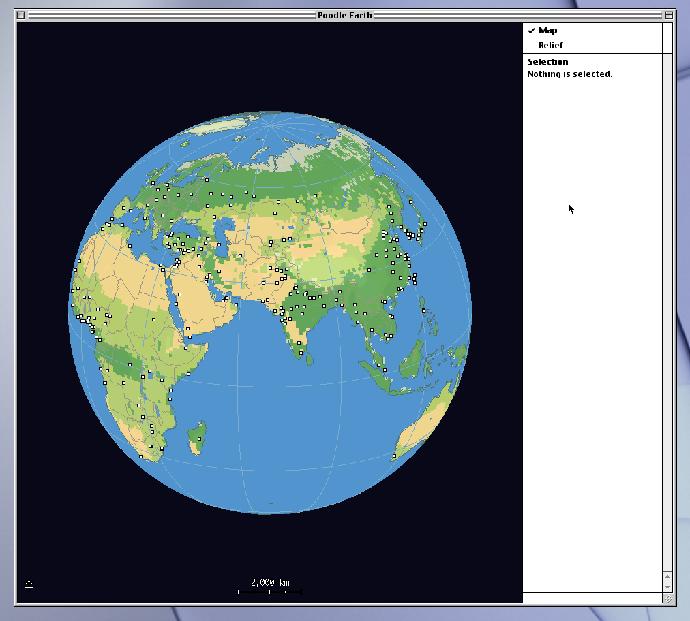
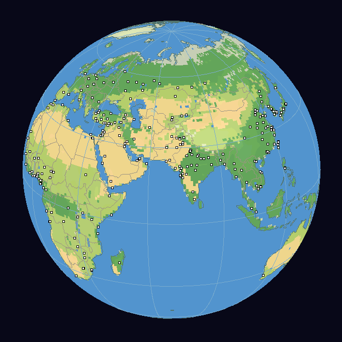
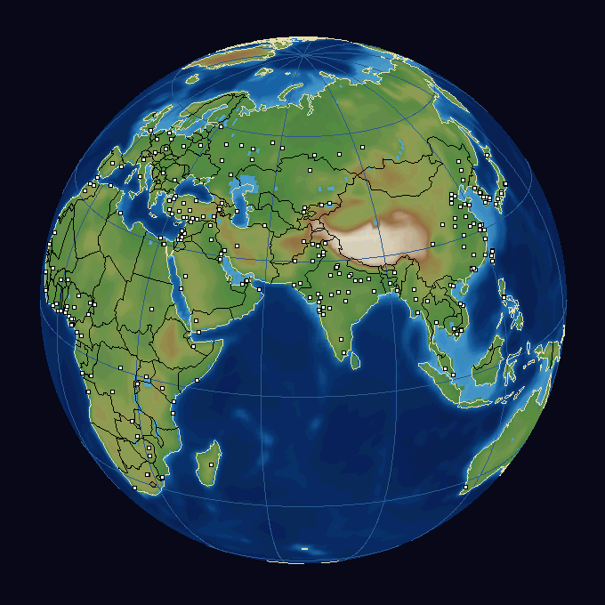
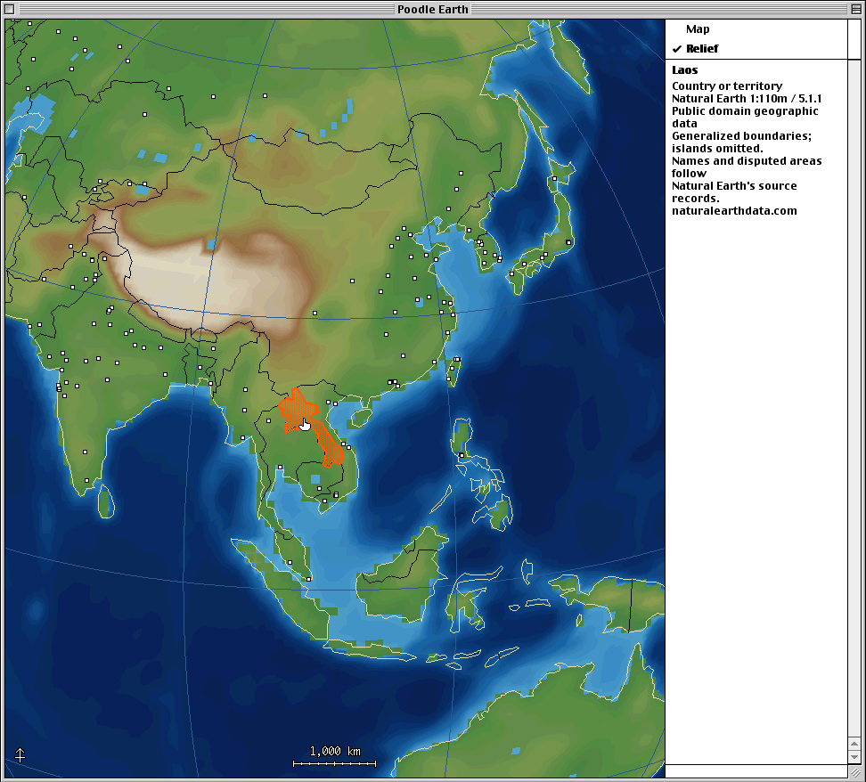

Poodle Earth
Offline globe for PowerPC Mac OS 7, 8 and 9.
Free and Open Source under GPLv3

Explore the globe



- Drag to turn the globe. Double-click to zoom. Click a country or city to see its information card.
- Switch between Map and Relief to see biomes or elevation. Press D for the night side.
- Press M and click two points to measure the distance.
Install Poodle Earth
The public preview is for PowerPC Classic Mac OS. You can run it on a real Mac, in an emulator, or build the X11 version from source on Linux or NetBSD. Choose a platform to see its instructions.
Classic Mac OS 7–9 (PowerPC)
Download Poodle Earth v0.1.1. The application prefers 24 MB of application memory (12 MB minimum).
- Download the StuffIt archive (.sit) onto your Mac or transfer it there.
- Expand it with StuffIt Expander on the Classic Mac.
- Copy the expanded folder to your hard disk and open Poodle Earth.
The Classic ReadMe has controls, memory notes and troubleshooting.
Infinite Mac — in your browser
- Visit Infinite Mac and choose a PowerPC Mac OS environment.
- Import the Poodle Earth
.sitarchive using that environment's file-import instructions. The method varies between machines. - Expand the archive inside the emulated Mac and open Poodle Earth.
Poodle Earth has been tested in Infinite Mac with PowerPC Mac OS 7.1.2 and later.
ClassicMac — desktop emulator
- Download ClassicMac for your computer.
- Follow ClassicMac's instructions to configure a PowerPC Mac OS guest using your own appropriately licensed system media.
- Download the hybrid
.isofrom the v0.1.1 release and attach it as a CD-ROM. - In Finder, copy Poodle Earth and the accompanying files to the guest's writable disk, then launch the copy.
Poodle Earth has been tested in ClassicMac emulating a Power Mac G4 with Mac OS 9.2.1. ClassicMac also has a separate Mac OS X Tiger profile; Poodle Earth does not currently ship a native Mac OS X version.
Systemless — experimental runtime
Systemless runs Classic Mac applications without an Apple ROM or System Folder. Follow its installation instructions and try passing the Poodle Earth .sit archive to the runtime.
Poodle Earth compatibility with Systemless has not yet been verified. This is an experimental option, not a supported installation method.
NetBSD and Linux — build from source (X11)
There is no packaged desktop installer yet. With CMake, Ninja, a C++20 compiler and X11 development dependencies, follow the source build instructions:
cmake -S . -B build -G Ninjacmake --build buildctest --test-dir build --output-on-failure- From an X11 desktop, run
./build/poodle-earth.
See the toolchain notes for tested compiler and target evidence. Cross-compilation alone does not prove target compatibility.
Windows, a standalone browser Reader and a multi-platform CD-ROM are future possibilities, not current downloads. Third-party emulators and operating systems are not included with Poodle Earth. Report an installation problem.
About the map
This preview uses simplified coastlines and borders and a limited set of cities. Some places, including San Marino and Paris, are missing.
Some territories, such as Puerto Rico, can be selected separately. Borders and selectable areas reflect the data bundled with the atlas. They do not imply a position on sovereignty or recognition.